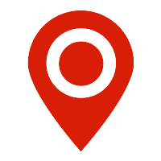

<!DOCTYPE html>
<html lang="en">
<head>
  <meta charset="utf-8">
  <meta http-equiv="content-language" content="zh-CN"/>
  <meta http-equiv="X-UA-Compatible" content="IE=edge">
  <meta name="viewport" content="initial-scale=1.0, user-scalable=no, width=device-width">
  <meta name="screen-orientation" content="portrait">
  <meta name="x5-orientation" content="portrait">
  <meta name="full-screen" content="yes">
  <meta name="x5-fullscreen" content="true">
  <meta name="browsermode" content="application">
  <meta name="x5-page-mode" content="app">
  <meta name="msapplication-tap-highlight" content="no">
  <title>附近</title>
  <script type="text/javascript" src="http://webapi.amap.com/maps?v=1.3&key=21774a6e1f26ebdaba87f50d2c141143"></script>
  <style type="text/css">
    html, body {
      width: 100%;
      height: 100%;
      margin: 0;
      padding: 0;
    }

    #container {
      width: 100 ％;
      height: 100%;
    }

    .locationIcon {
      width: 35px;
      height: 25px;
      background-color: #fff;
      padding-top: 5px;
      border-radius: 2px;
    }

    .locationIcon img {
      width: 22px;
      height: 22px;
      margin: 0 auto;
      display: block;
    }

    .amap-copyright {
      display: none !important;
    }
    .amap-scalecontrol{
      margin-left:50px;
      margin-top: 30px;
    }
  </style>
</head>
<body>
<div id="container"></div>

<script type="text/javascript">
  var map = new AMap.Map('container', {
    zoom: 15
  });
  var locationIcon = '<div class="locationIcon"> </div>';
  map.plugin(["AMap.ToolBar"], function () {
    //加载工具条
    var tool = new AMap.ToolBar();
    map.addControl(tool);
  });

  var onComplete = function(data){
    doSearch(data);
  };

  var onError = function(){
    alert('定位失败，请在手机上开启定位：设置->隐私->定位服务－>LBSAPP->使用定位期间－－打开');
  };

  map.plugin('AMap.Geolocation', function () {
    geolocation = new AMap.Geolocation({
      enableHighAccuracy: true,//是否使用高精度定位，默认:true
      timeout: 10000,          //超过10秒后停止定位，默认：无穷大
      maximumAge: 0,           //定位结果缓存0毫秒，默认：0
      convert: true,           //自动偏移坐标，偏移后的坐标为高德坐标，默认：true
      showButton: true,        //显示定位按钮，默认：true
      buttonPosition: 'LB',    //定位按钮停靠位置，默认：'LB'，左下角
      buttonOffset: new AMap.Pixel(10, 20),//定位按钮与设置的停靠位置的偏移量，默认：Pixel(10, 20)
      showMarker: true,        //定位成功后在定位到的位置显示点标记，默认：true
      showCircle: true,        //定位成功后用圆圈表示定位精度范围，默认：true
      panToLocation: true,     //定位成功后将定位到的位置作为地图中心点，默认：true
      zoomToAccuracy: true,      //定位成功后调整地图视野范围使定位位置及精度范围视野内可见，默认：false
      buttonDom: locationIcon
    });
    map.addControl(geolocation);
    AMap.event.addListener(geolocation, 'complete', onComplete);//返回定位信息
    AMap.event.addListener(geolocation, 'error', onError);      //返回定位出错信息
  });

  // TODO:
  // 1）点击marker，展示详细信息的infowindow 
  // 2) 点击marker，进行路径规划和导航
  function doSearch(data){
    if(data.info === 'SUCCESS' && data.type=== 'complete'){
      var pos = data.position;
      console.log(pos);
    AMap.service(["AMap.PlaceSearch"], function() {
        var placeSearch = new AMap.PlaceSearch({ //构造地点查询类
            pageSize: 10,
            pageIndex: 1,
            extension:base,
            type:'200300|200301|200302|200303'
        });

        var marker = new AMap.Marker({
          position:center,
          map:map,
          content:'<div class="loc_circle"></div>'
        });

        placeSearch.searchNearBy('卫生间', pos, 2000, function(status, result) {
          console.log(result);
          if(result.info === 'OK' && status === 'complete'){
            var pois = result.poiList.pois;
            console.log(pois);
          }
        });
        AMap.event.addListener(geolocation, 'complete', function(data){
          console.log(data);
        });//
      });
    }else{
      alert('调用地图服务器错误或者失败！');
    }
  }
  map.plugin(["AMap.Scale"],function(){
    var scale = new AMap.Scale();
    map.addControl(scale);
  });
</script>
</body>
</html>
